Next: The original model-free gradient Up: Model-free analysis Previous: Model-free analysis Contents Index
In the original model-free analysis of () the correlation function 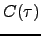 of the XH bond vector is approximated by decoupling the internal fluctuations of the bond vector 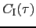 from the correlation function of the overall Brownian rotational diffusion by the equation
| 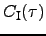 | (theparentequation.59) |
The overall correlation functions of the diffusion of a sphere, spheroid, and ellipsoid are presented respectively in section  on page
on page  , section
, section  on page
on page  , and section
, and section  on page
on page  . These three different equations can be combined into one generic correlation function which is independent of the type of diffusion. This generic correlation function is
. These three different equations can be combined into one generic correlation function which is independent of the type of diffusion. This generic correlation function is
| 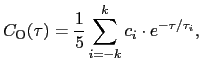 | (theparentequation.60) |
where 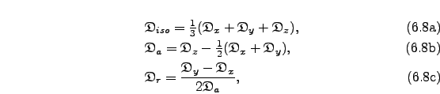 are the weights and 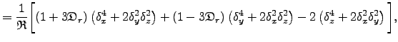 are correlation times of the exponential terms. In the original model-free analysis of (,) the internal motions are modelled by the correlation function
| 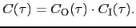 | (theparentequation.61) |
where  is the generalised Lipari and Szabo order parameter which is related to the amplitude of the motion and
is the generalised Lipari and Szabo order parameter which is related to the amplitude of the motion and  is the effective correlation time which is an indicator of the timescale of the motion, albeit being dependent on the value of the order parameter. The order parameter ranges from one for complete rigidity to zero for unrestricted motions. Model-free theory was extended by () to include motions on two timescales by the correlation function
is the effective correlation time which is an indicator of the timescale of the motion, albeit being dependent on the value of the order parameter. The order parameter ranges from one for complete rigidity to zero for unrestricted motions. Model-free theory was extended by () to include motions on two timescales by the correlation function
| 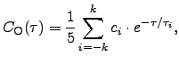 | (theparentequation.62) |
where the faster of the motions is defined by the order parameter  and the correlation time 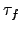
, the slower by the parameters 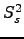
and 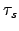
, and the two order parameter are related by the equation
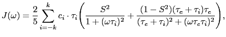
.
and the correlation time 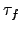
, the slower by the parameters 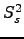
and 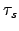
, and the two order parameter are related by the equation
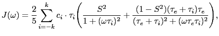
.
The relaxation equations of () are composed of a sum of power spectral density functions 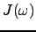 at five frequencies. The spectral density function is related to the correlation function as the two are a Fourier pair. Applying the Fourier transform to the correlation function composed of the generic diffusion equation and the original model-free correlation function results in the equation
The Fourier transform using the extended model-free correlation function is